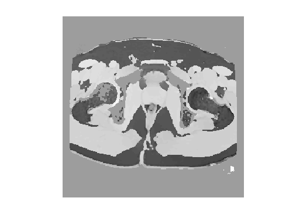

Contents
Introduction
% This examples illustrates how to use the single peak CSI estimation and % background suppression algorithm.
Load data
load /FUS4/data2/mfgre/Prelimary_PreBAT/051111_mfgre_prostate/raw_data.mat
LS ARMA for multi echo data
If more than one echo is collected a signal model with one peak can be used to estimate the phase. In this case dat2 has size Ny x Nx x Ne x Nz.
dat2=dat2(:,:,:,1); size(dat2)
ans = 256 256 16
Compute 1 peak model. If only the input data is passed to the function it assumes echo spacing of 1/2/pi and B0=1, which results in the phase of the peak.
[ppm,t2s,a,b] = CSI_LS1(dat2); % The ppm map and t2-star map is of size Ny x Nx x Nz. % We have to make sure that there is no "not a number" in the results ppm(isnan(ppm))=0; t2s(isnan(t2s))=0; figure, imagesc(ppm(:,:,1)); colormap(gray); axis equal; axis off
Background suppression using L1 edge detection.
We apply the background suppression to complex data with wrappped phase. Note ppm should contain angles, and not actual ppms, otherwise the phase unwrapping will fail.
% 1. compute weighting matrix for phase data. Here we use the mean of the % magnitudes of the original data w=squeeze(mean(abs(dat2),3)); % 2. remove background alpha = bgsup3(ppm,w.^2,struct('nth',1e-4)); % compute a mask for displaying and classification (5% of max amplitude) mask=w>0.05*max(w(:)); figure, imagesc(mask(:,:,1).*alpha(:,:,1)); colormap(gray); axis equal; axis off
edge detection y-dir .................................................. edge detection x-dir .................................................. edge detection z-dir . Laplace eq solution: iter = 83 (eps = 9.934597e-03)
k-means classification
run a quick classification using k-means
labels=zeros(size(alpha)); idx=kmeans(alpha(mask==1),2); labels(mask==1)=idx; figure, imagesc(labels(:,:,1)); colormap(gray); axis equal; axis off